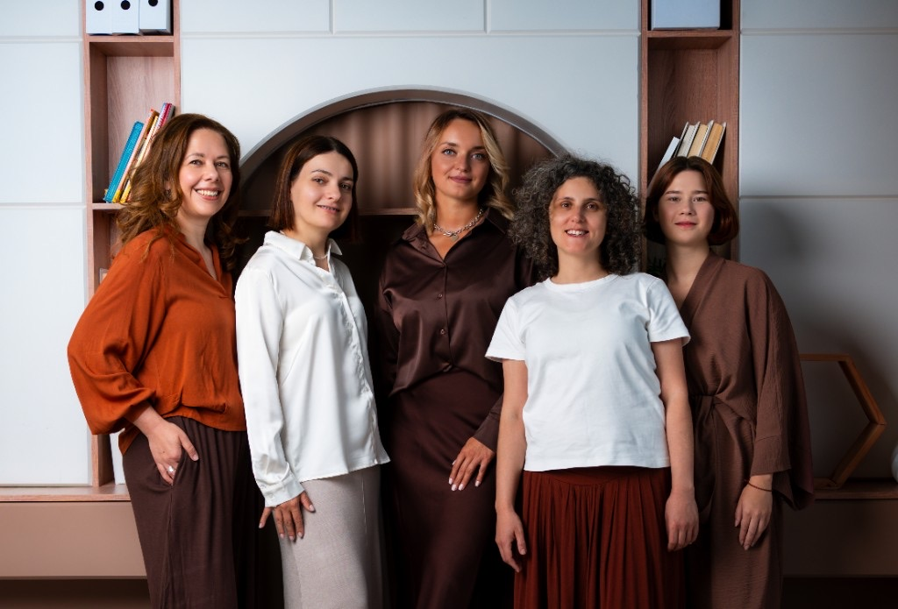

Доказательный подход
Используем научно обоснованные методы и международные диагностические протоколы.
Центр доказательной терапии
Мы — психологический центр, который оказывает помощь детям, подросткам и взрослым на основе современных научных данных и клинических рекомендаций. Мы проводим индивидуальную и групповую психотерапию, психологическую диагностику и специализированные программы поддержки, подбирая методы с учётом запроса, возраста, особенностей состояния и целей клиента.

Мы помогаем детям, подросткам, взрослым и семьям лучше понимать своё состояние, справляться с психологическими трудностями и развивать устойчивые навыки саморегуляции и взаимодействия. Наша работа строится на ясных целях, уважении к индивидуальным особенностям и границам клиента, а также на методах с подтверждённой эффективностью.
Также поддерживаем семьи на этапах беременности, подготовки к родительству и адаптации после рождения ребёнка.
Используем научно обоснованные методы и международные диагностические протоколы.
Формат и план помощи определяются с учётом запроса, возраста, состояния и контекста жизни клиента.
Проводим очные встречи в Москве и работаем онлайн с клиентами из разных стран.
Описания ниже помогают сориентироваться в типичных запросах. Они не являются диагностикой и не заменяют консультацию специалиста.
Сложности с вниманием, поведением, общением, настроением, адаптацией или обучением.
Тревога, стресс, низкая самооценка, экзаменационное напряжение и учебные трудности.
Тревожные и депрессивные состояния, стресс, эмоциональное истощение, выгорание и жизненные кризисы.
Поддержка детско-родительских отношений, адаптация к изменениям и выстраивание устойчивой семейной коммуникации.
Не уверены, какая услуга нужна? Напишите — поможем выбрать подходящий формат.
Помочь выбрать форматНаправления, с которых чаще всего начинается работа. Подробности — на страницах услуг, диагностики и программ.
Работа с тревогой, настроением, стрессом, выгоранием и жизненными кризисами.
Поддержка с учётом возраста, развития и семейного контекста.
Оценка развития, эмоционального состояния, поведения и обучения.
Стандартизированное наблюдение: социальное взаимодействие, коммуникация, игра и поведение у детей и подростков.
Навыки саморегуляции и снижение экзаменационной тревожности у студентов.
Сопровождение семьи на этапах беременности и адаптации после рождения ребёнка.
Тест помогает расширить представление о карьерных вариантах, выбрать направления для обучения и составить более осознанный план профессионального развития.
Используем методы, эффективность которых изучалась в клинических исследованиях.
Не применяем один универсальный сценарий ко всем клиентам.
При работе с детьми учитываем семейную систему и роль значимых взрослых.
Заранее обсуждаем цели, формат работы, обратную связь и дальнейшие шаги.
Мы отслеживаем динамику и при необходимости корректируем план работы. Мы не обещаем гарантированный результат — помогаем двигаться к согласованным целям.
Вы описываете запрос в Telegram, по телефону или электронной почте.
С вами связывается наш куратор. Она проясняет запрос и согласует временные слоты для встречи со специалистами.
При необходимости проводим диагностические встречи и собираем важную информацию.
Согласовываем регулярность встреч, задачи и формат обратной связи.
Снижение экзаменационной тревожности и развитие навыков саморегуляции.
О программеПоддержка на этапах беременности, подготовки к родительству и адаптации после рождения ребёнка.
О программеПонимание поведения ребёнка, работа с родительской тревогой и устойчивая коммуникация в семье.
О программеСпециалисты центра сочетают клиническую, исследовательскую, образовательную и практическую экспертизу.

Директор психологического центра
Светлана отвечает за слаженную работу команды, развитие сервиса и организацию помощи клиентам. Она выстраивает понятные процессы, координирует работу специалистов, развивает новые направления и следит за тем, чтобы психологическая поддержка оставалась своевременной, доступной и соответствовала стандартам качества.

Клинический руководитель
Ксения — клинический психолог с более чем 10-летним опытом работы в сфере детского развития и поддержки семей. Она также следит за качеством психологических услуг: помогает команде сохранять единые профессиональные стандарты, опираться на научно обоснованные методы и внимательно относиться к потребностям каждого клиента.
Материалы Ксении Макаровой и Светланы Романченко — для родителей и взрослых, которые хотят лучше понимать запрос до обращения.
Короткое знакомство, где мы ответим на вопросы, уточним запрос и обсудим подходящий формат работы.